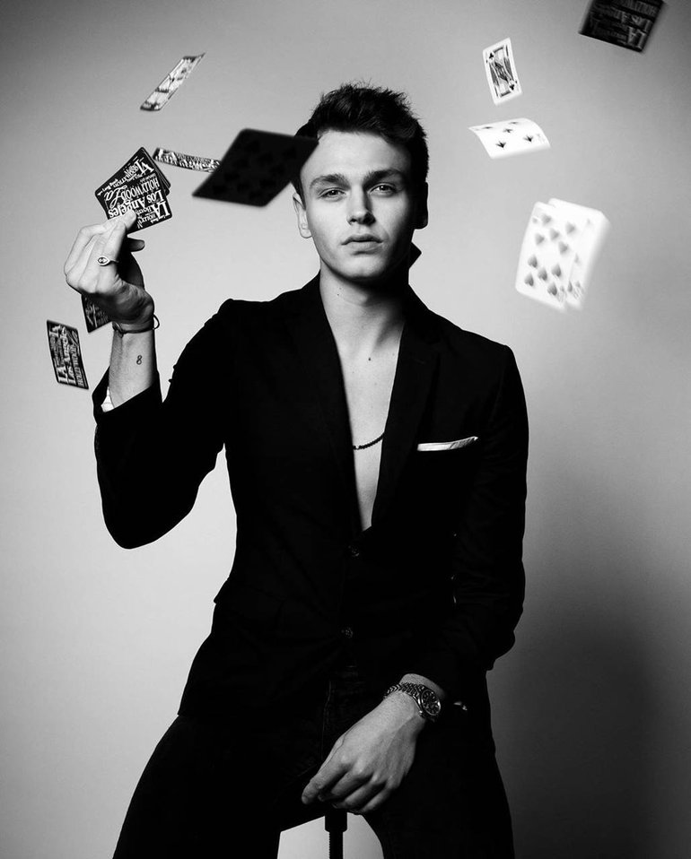
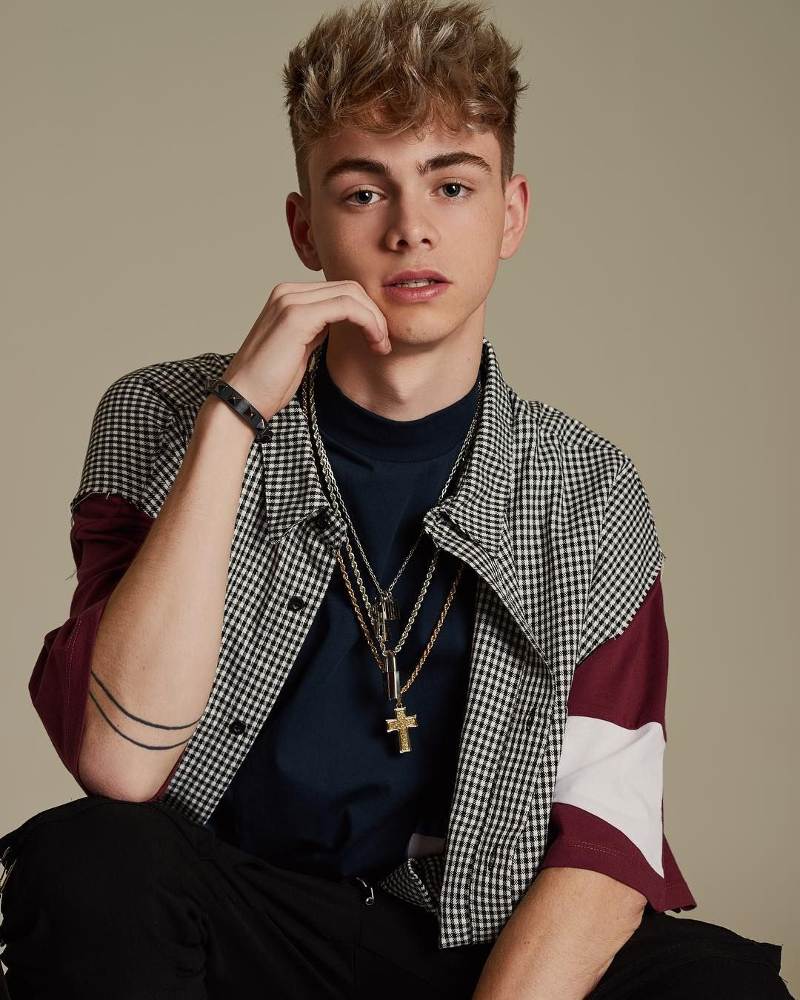
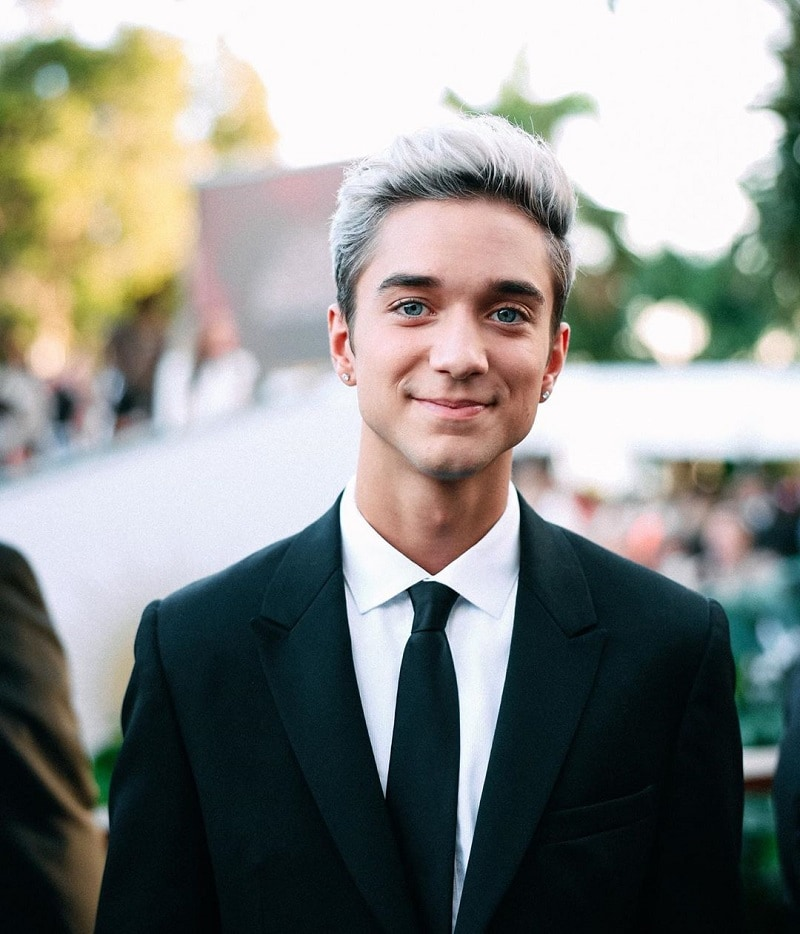
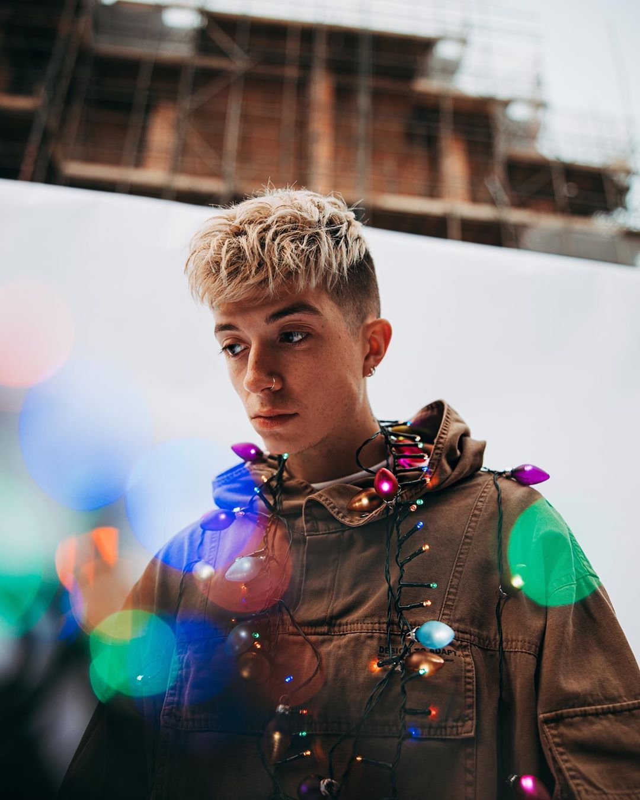
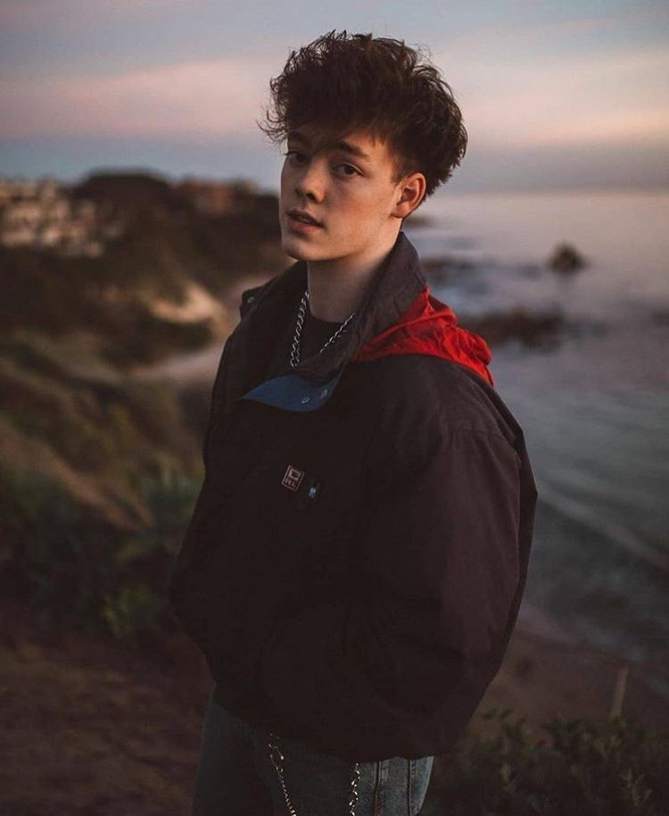

Jonah Marais
Jonah's volledige naam is Jonah Marais Roth Frantzich. Marais is zijn tweede naam en niet zijn achternaam. Jonah is geboren op 16 juni 1998, in Stillwater Minnesota. Jonah heeft groen-blauwe ogen en bruin haar. Jonah komt uit een gezin van 1 broer (Zebulon) en 2 zusjes (Grace en Svea). Jonah begon heel vroeg met muziek maken en deelde zijn muziek op de platformen 'Spotify', waar hij twee albumen op plaatste, en 'YouNow'. YouNow is Amerikaanse live-omroepsdienst waar gebruikers hun eigen content kunnen delen. Hij deed in de buurt van zijn ouderlijk huis hier en daar optreden en had dus van zichzelf fans. Momenteel wonen Jonah en Corbyn samen met hun beste vriend Eben. Jonah is een echte familie-persoon, hij zorgt als oudste voor de andere 4 jongens wanneer ze zich gedragen als kleine kinderen. Zijn vriendin is, model, Tatum Dahl.
Corbyn Besson
Corbyn's volledige naam is Corbyn Matthew Besson. Corbyn is geboren op 25 november 1998 in Dallas, Texas, maar is opgeroeit in Virginia. Corbyn heeft groen-blauwe ogen en zijn natuurlijke haarkleur is bruin, maar hij heeft het 4 jaar lang geblondeerd. Corbyn's moeder is Nederlands, hij heeft veel familie in Nederland en de meiden van O'G3NE zijn nichten van hem. Corbyn is de oudste van de drie kinderen in het gezin. Hij heeft namelijk een jonger broertje genaamd Jordan en een jonger zusje genaamd Ashley. Corbyn heeft een relatie met de Youtuber Christina Harris. Christina staat bekent om haar eigen naam 'Beautychikee', dit is ook de naam van al haar sociale media en productlijn. In het beginjaar van de band was ze veel met de band, maar naar mate de band bekent werd, stopte ze om heel utibundig met de band om te gaan. Dit met de reden dat ze niet bekent gaat staan als "de vriendin van Corbyn".
Daniel Seavey
Daniel's volledige naam is Daniel James Seavey. Daniel Seavey is geboren in Portland, Oregon, op 2 april 1999. Daniel heeft blauwe ogen en bruin haar. In 2020 heeft hij echter ervoor gesloten om zijn haar te blonderen en heeft zelf zijn haar verschillende kleuren gegeven. Daniel heeft twee oudere broers (Tyler en Christian) en een jonger zusje (Anna). Een tijd lang was de oudste broer, Tyler, deel van de management van de band. In het jaar 2019 heeft Tyler besloten om er mee te stoppen. Daniel kwam al op vroege leeftijd er achter dat hij van muziek hield en wilde er iets mee doen. Hij was rond zijn 10e toen hij op de straat van Oregon op de piano ging spelen en zingen. Op zijn 15e deed hij mee aan het zangprogamma 'American Idol' en eindigde in de top 9. Hoewel hij de competitie niet won, had hij veel meer fans voordat hij begon aan het progamma.
Jack Avery
Jack's volledige naam is Jack Robert Avery. Jack is geboren op 1 juli 1999 in Burbank, Californië. Jack heeft donkerbruine ogen en bruin haar. Hij heeft van 2016 tot 2020 heeft hij zijn haar gepermenteerd en de bovenste plukjes laten blonderen. Jack heeft in totaal drie zussen. Als eerst werd zijn oudste zus geboren genaamd Sydnie. Toen werd Jack geboren en was de relatie tussen zijn vader en moeder voorbij en in de relatie van zijn moeder zijn er nog twee dochters gekomen, zijn twee jongere zussen genaamd Ava en Isla. Jack is de enige van de vijf bandleden die al vader is. Hij heeft, samen met Gabriella Gonzalez, een dochter gekregen. Zijn dochter heet Lavender May Avery. De ouders hebben dit besloten omdat Gabriella altijd haar kind Lavender had willen noemen en May komt doordat Lavender was uitgerekend om geboren te worden in mei, maar ze kwam een maandje eerder. Gabriella en Jack zijn geen stel meer, maar zorgen allebei nog voor Lavender.
Zach Herron
Zach's volledige naam is Zachary Dean Herron. Zach is geboren op 27 mei 2001 in Dallas, Texas. Zach heeft donkerbruine ogen en bruin haar. Zach komt uit een gezin van drie kinderen. Hij is de oudste van de drie, zijn broertje heet Ryan en zijn zusje heet Reese. Ook Zach had al fans voordat hij in de band zat. Zach is viraal gegaan toen iemand van zijn middelbare school hem filmde toen hij het lied 'Stitches' van Shawn Mendes zong, en dit online zette. Dit heeft onder andere ervoor gezorgd dat Zach meer tijd investeerde in muziek. Toen aan Zach werd voorgesteld om mee te doen aan de band, zat hij nog steeds op de middelbare school (hij was 15 jaar oud). Hij heeft besloten om te stoppen met school en het aanbod om mee te doen met de band. In meerdere interviews zegt hij zelf dat hij in het begin van veel verschillende mensen te horen gekregen dat het niet een slim idee was. Desondanks deed hij heel erg zijn best en heeft hij al meer dan drie keer een tour gedaan in meerdere continenten.